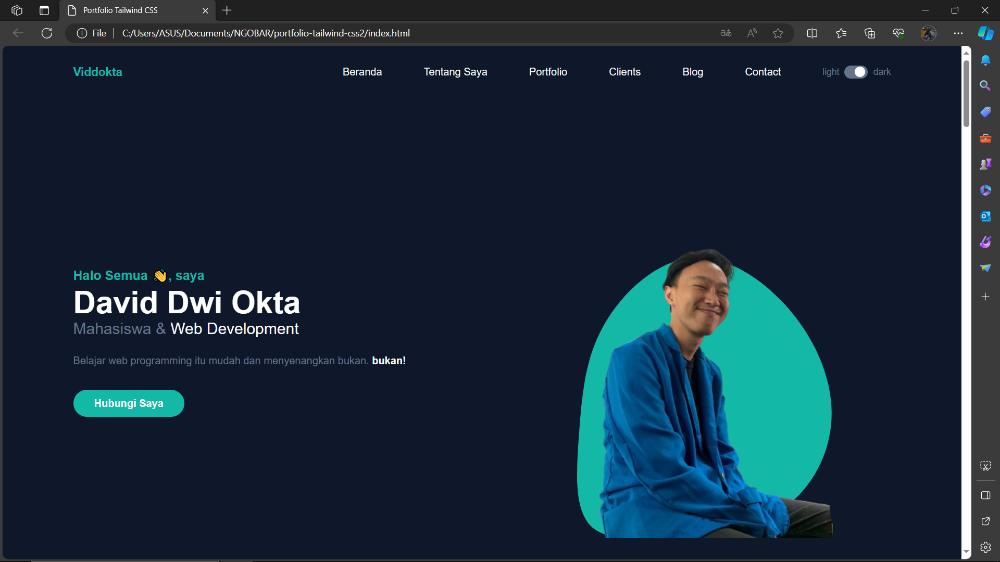

Temukan berbagai artikel menarik, panduan praktis, dan pemikiran inspiratif di blog kami. Vidd Blog
membawa Anda ke dunia pengetahuan dan ide-ide kreatif. Kami percaya bahwa setiap artikel memiliki
keunikan dan memberikan nilai tambah bagi pembaca kami.
Dengan beragam topik yang dibahas, mulai dari kreativitas, teknologi, gaya hidup, hingga perjalanan,
Vidd Blog menjadi teman setia Anda dalam mencari informasi yang bermanfaat dan menghibur.
Selamat menikmati setiap artikel yang kami sajikan. Jangan lupa untuk berlangganan agar tidak
ketinggalan pembaruan terbaru!
#1 Project Portofolio
Tanggal Posting: 28 Oktober 2023

Proyek portofolio ini adalah representasi visual dari perjalanan dan keterampilan saya dalam dunia
pengembangan web.
Dengan desain yang menarik dan fungsionalitas yang terintegrasi, portofolio ini memamerkan berbagai
proyek yang telah saya kerjakan. Melalui setiap tautan, Anda dapat menjelajahi proyek-proyek kreatif
yang mencakup teknologi terkini dan konsep desain
inovatif. Saya berharap portofolio ini memberikan wawasan tentang kemampuan dan minat saya dalam
menciptakan solusi web yang menarik dan efektif.
Nikmati pengalaman unik dengan sentuhan kopi yang khas dan suasana yang hangat. Di sini, kami
menghadirkan lebih dari sekadar secangkir kopi.
Kami membawa Anda dalam perjalanan rasa yang menggoda dan kenangan yang tak terlupakan. Dengan
desain yang modern dan ramah pengguna, website ini memudahkan Anda untuk menjelajahi menu kopi kami,
mengetahui asal usul biji kopi yang digunakan, dan menikmati
detail unik setiap hidangan. Temukan berbagai pilihan kopi dari berbagai belahan dunia yang
dipanggang dengan hati-hati untuk menciptakan cita rasa yang sempurna. Bergabunglah dengan kami di
Kedai Kopi Kenangan Senja, di mana setiap
tegukan adalah perjalanan menuju kesempurnaan kopi. Selamat menikmati!"
Selamat datang di halaman 404 kami! Meskipun ini bukan destinasi yang diinginkan, tetapi kami siap
membimbing Anda kembali ke jalur yang benar.
Kami mengerti bahwa kadang-kadang dalam perjalanan digital, kita bisa tersesat. Halaman yang Anda
cari mungkin tersembunyi di antara garis kode atau mungkin telah berpindah tempat. Kami ingin
memastikan bahwa setiap langkah yang Anda ambil di dunia online
ini bermakna. Mari kita kembali ke beranda dan bersama-sama menjelajahi petualangan tak terduga yang
menunggu. Terima kasih atas kesabaran dan pengertian Anda. Sampai jumpa di halaman lain!" Anda dapat
menyesuaikan kata-kata tersebut
sesuai dengan nuansa dan karakteristik dari proyek template halaman 404 Anda.
Proyek "Bahagia Bersama" adalah sebuah website undangan pernikahan yang kami rancang dengan penuh cinta
dan perhatian.
Dengan halaman beranda yang ramah, kami ingin membagikan cuplikan kisah cinta kami dan memberikan
gambaran tentang acara pernikahan yang akan datang. Website ini tidak hanya menyediakan informasi
lengkap tentang tanggal, waktu, dan lokasi pernikahan,
tetapi juga menampilkan galeri gambar dan video pra-pernikahan yang mencakup momen-momen indah
selama masa persiapan. Salah satu fitur unik yang kami tawarkan adalah "Cerita Cinta Interaktif," di
mana tamu dapat menjelajahi perjalanan
cinta kami melalui teks, gambar, dan animasi. Kami juga menyediakan formulir RSVP digital untuk
memudahkan tamu dalam mengkonfirmasi kehadiran mereka secara online. Selain itu, terdapat "Wall of
Wishes" di mana tamu dapat memberikan
ucapan dan harapan mereka untuk pernikahan kami. Dalam mengembangkan website ini, kami menggunakan
teknologi HTML, CSS, dan JavaScript untuk front-end, serta platform manajemen konten untuk
pemeliharaan yang mudah. Hosting dilakukan
di platform handal untuk memastikan ketersediaan maksimal. Proyek ini bertujuan memberikan
pengalaman undangan pernikahan yang informatif, interaktif, dan hangat bagi para tamu. Kami berharap
setiap klik dan interaksi di website ini
menjadi bagian dari perayaan cinta dan kebersamaan kami, dan kami tak sabar untuk berbagi
kebahagiaan kami dengan semua tamu yang hadir. Selamat datang di perjalanan cinta kami yang tak
terlupakan!
Proyek "Contoh Membuat Form dengan PHP" adalah implementasi sederhana namun efektif tentang cara membuat
formulir web interaktif menggunakan PHP.
Dengan tujuan untuk memberikan pemahaman dasar tentang penggunaan PHP dalam pengembangan web, proyek
ini menunjukkan langkah-langkah praktis dalam membuat dan memproses formulir. Pertama, halaman
formulir dibangun dengan HTML, menampilkan elemen formulir
seperti input teks, area teks, dan tombol kirim. Kemudian, dengan bantuan PHP, proyek ini
menggambarkan cara mengakses dan memproses data yang dikirim oleh pengguna melalui formulir
tersebut.
Fitur utama proyek ini melibatkan penggunaan PHP untuk:
Mengambil dan memvalidasi data formulir yang dikirim oleh pengguna.
Menangani logika bisnis atau pemrosesan data, seperti menyimpan data ke database atau
mengirim email notifikasi.
Memberikan umpan balik kepada pengguna, baik itu untuk memberi tahu mereka bahwa
formulir telah berhasil dikirim atau untuk menangani kesalahan input.
Proyek ini menekankan praktik-praktik terbaik dalam keamanan web, seperti validasi input dan
pencegahan serangan seperti injeksi SQL atau Cross-Site Scripting (XSS). Selain itu,
dokumentasi yang jelas dan komentar pada kode memberikan panduan bagi pengembang
pemula untuk memahami setiap langkah dalam proses pembuatan formulir. Dengan proyek ini,
diharapkan para pengembang pemula dapat menguasai dasar-dasar pembuatan dan pemrosesan
formulir web menggunakan PHP, membuka pintu bagi
pemahaman lebih lanjut tentang pengembangan web dinamis. Proyek ini juga dapat dijadikan
dasar untuk pengembangan formulir yang lebih kompleks dan fungsional dalam proyek-proyek web
berikutnya.
Proyek "Calculator iPhone Style" adalah implementasi desain kalkulator yang terinspirasi oleh antarmuka
kalkulator pada perangkat iPhone.
Dengan fokus pada penggunaan elemen desain yang bersih, intuitif, dan responsif, proyek ini membawa
pengalaman menghitung yang familiar dan nyaman ke dalam lingkungan web.
Fitur utama dari proyek ini mencakup:
Desain Responsif: Antarmuka kalkulator dirancang untuk beradaptasi
dengan berbagai ukuran layar, memberikan pengalaman pengguna yang konsisten di berbagai
perangkat, termasuk desktop dan perangkat seluler.
Operasi Matematika Dasar: Kalkulator mendukung operasi matematika dasar
seperti penambahan, pengurangan, perkalian, dan pembagian, memastikan pengguna dapat
dengan mudah melakukan perhitungan sehari-hari.
Tata Letak yang Bersih: Tata letak kalkulator dirancang dengan bersih
dan rapi, memudahkan pengguna untuk menavigasi dan mengidentifikasi tombol yang
diperlukan.
Animasi Responsif: Pengguna akan menemui animasi responsif saat menekan
tombol kalkulator, memberikan umpan balik visual yang menyenangkan dan meningkatkan
pengalaman pengguna.
Memori Sementara (Memory): Kalkulator dilengkapi dengan fitur memori
sementara, memungkinkan pengguna menyimpan dan mengakses angka untuk penggunaan
berikutnya.
Histori Perhitungan: Fitur histori perhitungan memungkinkan pengguna
melihat riwayat perhitungan sebelumnya, memberikan visibilitas terhadap langkah-langkah
yang diambil dalam proses perhitungan.
Proyek ini dirancang untuk memenuhi kebutuhan pengguna yang mencari kalkulator berbasis web
yang tidak hanya berfungsi dengan baik tetapi juga menawarkan estetika antarmuka yang
menarik. Dengan menggunakan teknologi web seperti HTML, CSS, dan JavaScript,
proyek ini dapat dengan mudah diakses dan digunakan oleh pengguna di seluruh platform.
Dengan demikian, "Calculator iPhone Style" menjadi pilihan ideal bagi mereka yang
menginginkan kalkulator praktis dengan sentuhan desain
yang elegan dan modern.
"Game Tic Tac Toe Sederhana adalah reimajinasi digital dari permainan papan klasik yang dihadirkan dalam
antarmuka yang bersih dan minimalis.
Didesain untuk memberikan pengalaman bermain yang sederhana namun memikat, game ini memungkinkan dua
pemain bersaing secara lokal, memilih simbol 'X' atau 'O' untuk mengisi kotak pada papan permainan.
Animasi yang efektif menyorot garis pemenang saat
permainan selesai, sementara indikator giliran dan pemberitahuan hasil memberikan keteraturan dan
kejelasan selama permainan. Dengan fitur reset otomatis, pemain dapat dengan mudah memulai
pertandingan baru tanpa perlu me-refresh halaman.
Dirancang menggunakan HTML, CSS, dan JavaScript, proyek ini menyajikan permainan klasik dengan
sentuhan modern yang cocok untuk semua penggemar Tic Tac Toe yang mencari hiburan santai dan
menyenangkan."
Proyek "HTML & CSS Toko Online" adalah sebuah platform e-commerce yang menonjol dengan desain responsif
dan antarmuka pengguna yang menarik.
Halaman beranda yang dirancang dengan cermat memamerkan produk unggulan dan penawaran spesial,
menarik pengunjung untuk menjelajahi berbagai kategori produk. Setiap produk memiliki halaman detail
yang komprehensif, menyajikan gambar, deskripsi, dan harga.
Pengguna dapat dengan mudah menambahkan produk ke keranjang belanja responsif, dan halaman
pembayaran yang aman memastikan proses pembelian yang lancar. Dengan footer informatif yang mencakup
kontak dan tautan ke kebijakan privasi,
proyek ini memberikan pengalaman belanja online yang intuitif dan menyenangkan. Dibangun dengan HTML
untuk struktur dan CSS untuk desain, proyek ini memberikan dasar yang solid bagi pengembang pemula
yang ingin mendalami pembuatan
antarmuka pengguna e-commerce.
Proyek Program Kuis Sederhana adalah implementasi permainan kuis interaktif yang bertujuan memberikan
pengalaman belajar yang menyenangkan.
Dengan menggunakan bahasa pemrograman tertentu, program ini memungkinkan pengguna untuk menguji
pengetahuan mereka melalui serangkaian pertanyaan yang bervariasi. Antarmuka yang sederhana dan
responsif memandu pengguna melalui setiap langkah, sementara
sistem skoring memberikan umpan balik langsung tentang seberapa baik mereka menjawab setiap
pertanyaan. Dengan keberagaman topik dan tingkat kesulitan yang dapat diatur, program ini cocok
sebagai alat pendidikan yang menarik dan dapat
disesuaikan. Melalui desain yang intuitif, proyek ini dirancang untuk memperkaya pengalaman
pembelajaran sambil menyajikan suasana kuis yang menyenangkan bagi pengguna.
Proyek Contoh Halaman Login adalah implementasi sederhana dari antarmuka login untuk aplikasi atau situs
web.
Dengan fokus pada desain yang bersih dan fungsionalitas yang jelas, halaman login ini menyediakan
pengguna dengan tempat yang aman untuk memasukkan informasi kredensial mereka. Didesain dengan
elemen-elemen yang minimalis, seperti formulir input untuk
username dan password, serta tombol login yang terlihat jelas, proyek ini memprioritaskan pengalaman
pengguna yang mudah dan cepat. Desain responsif memastikan keberlanjutan antarmuka di berbagai
perangkat. Meskipun sederhana, proyek
ini dapat diintegrasikan dan dikembangkan lebih lanjut untuk kebutuhan autentikasi pada berbagai
jenis aplikasi atau platform. Dengan begitu, Contoh Halaman Login ini dapat dijadikan dasar yang
solid untuk pengembangan lebih lanjut
dalam implementasi login yang aman dan mudah digunakan.
Proyek Blog Objek Wisata adalah platform online yang mengundang pengunjung untuk menjelajahi keindahan
dan keunikan destinasi wisata.
Melalui desain yang menarik dan konten informatif, blog ini menyajikan pengalaman digital yang
memukau bagi para pembaca yang mencari inspirasi perjalanan. Setiap objek wisata diceritakan dengan
penuh detail, dilengkapi dengan gambar menarik, informasi
praktis, dan pengalaman pribadi. Kategori yang jelas memudahkan pembaca untuk menemukan destinasi
sesuai minat mereka. Terdapat juga fitur komentar untuk berbagi pengalaman dan tips. Dengan
menggunakan teknologi web terkini, proyek
ini memberikan pandangan virtual yang memikat dan dapat diakses oleh para penggemar perjalanan dari
berbagai lapisan masyarakat.